inversions
checkerboard tests
The tests were using synthetic datasets calculated with the membrane model. For different checkerboards (background phase velocity maps using spherical harmonics with different angular degrees L and M) the synthetic datum was obtained by crosscorrelating the synthetic seismogram with a reference trace calculated for a homogeneous background Earth.The datasets use the same source-station setups as the ETL97 database for Love waves at 150 s period (and minor arcs only). They contain 16'624 measurements. The following image shows the number of great-circle rays which pass through each single pixel of the inversion grid, thus dark regions have a high data coverage.
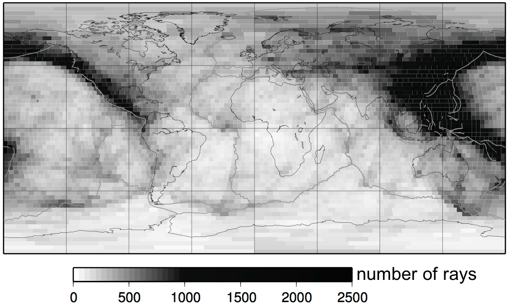
For the inversions, either ray-theory/great-circle approximation (JWKB) or numerical Born kernels (BORN) were used to find a solution by a least-squares routine. I changed only the roughness damping coefficient (no norm-damping is applied) between a range of 0 to 10. The inversions were applied on a pixel-grid with approximately 3x3 degree pixels around the equator, thus inverting for 4592 model parameters.
L9M5 - input model
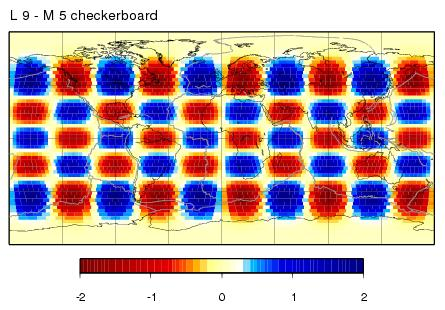| L9M5 - maps - JWKB | L9M5 - maps - BORN |
L9M5 - 10 percent input model
This checkerboard uses the same spherical harmonics L=9 and M=5 as in the first example but with 10% perturbation amplitudes instead. 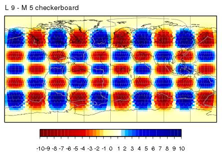| L9M5 - 10 percent maps - JWKB | L9M5 - 10 percent maps - BORN |
|
L9M5 - 10 percent starting model - 1. iteration
I took this solution from the BORN inversion from above and calculated all the Born kernels again. Then rerun the inversion with different damping coefficients. 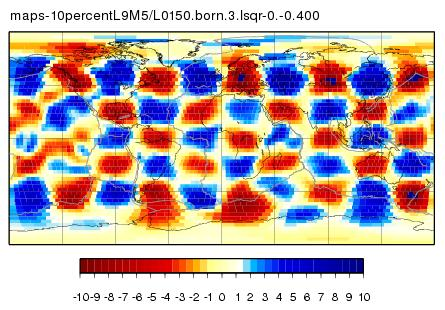 |
L9M5 - 10 percent maps - 1. iteration BORN
|
|
L9M5 - 10 percent starting model - 2. iteration
Starting with this model from the 1. iteration, recalculating the Born kernels and inverting the synthetics is shown here. 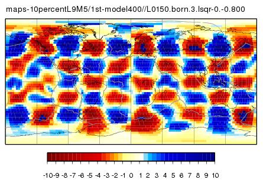 |
L9M5 - 10 percent maps - 2. iteration BORN
|
L13M7 - input model
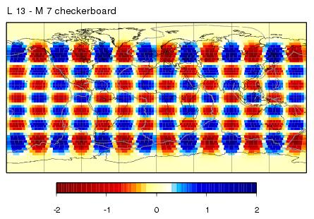| L13M7 - maps - JWKB | L13M7 - maps - BORN |
L20M10 - input model
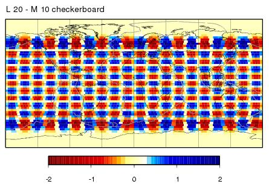| L20M10 - maps - JWKB | L20M10 - maps - BORN |
|
L20M10 - starting model - 1. iteration
I took this solution from the BORN inversion from above and calculated all the Born kernels again. Then rerun the inversion with different damping coefficients. 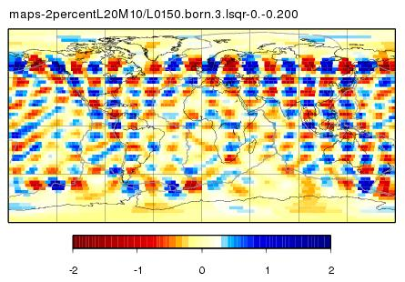 |
L20M10 - maps - 1. iteration BORN
|
|
L20M10 - starting model - 2. iteration
This time I took this solution from the 1.iteration results. Again, recalculated the Born kernels and rerun the inversions with different damping coefficients. 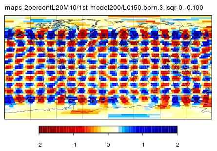 |
L20M10 - maps - 2. iteration BORN
|
TW 95 - input model
In this test, I take the phase-velocity map from Trampert & Woodhouse 1995 for Love waves at 150 s as the (background) input model and calculate the synthetic datum by cross-correlating the waveforms obtained numerically by the membrane model.My source/station distribution is equal to the ETL97 distribution for Love wave at 150 s. Thus, instead of the 23'803 minor arc couples which Trampert & Woodhouse used to derive the map, I only take 16'624 couples. The locations of sources and stations may differ therefore a bit. The following figure shows the ray paths for the Trampert & Woodhouse source/station distribution. 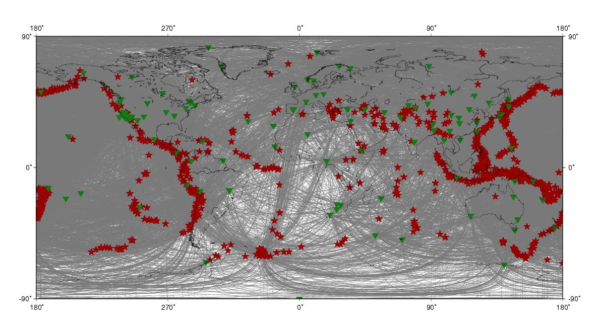
And this is the same figure for the distribution taken from the ETL97 dataset.
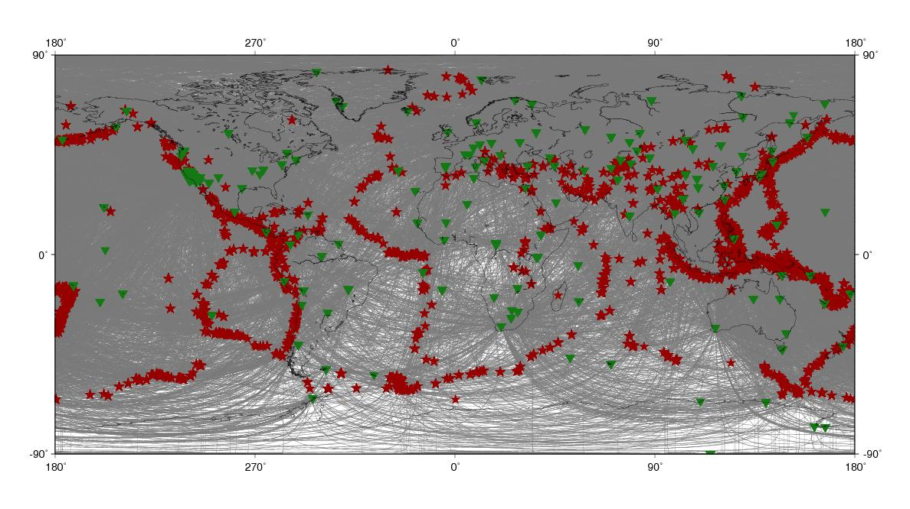 The inversions should reveal this TW95 input model: 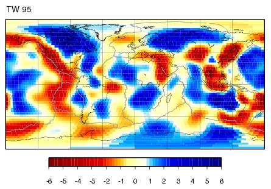
| TW95 - maps - JWKB | TW95 - maps - BORN |
| TW95 - spectra - JWKB | TW95 - spectra - BORN |
TW 96 - input model
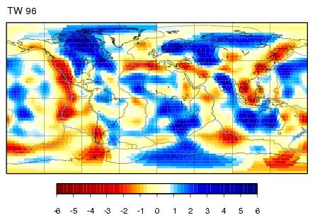| TW96 - maps - JWKB | TW96 - maps - BORN |
| TW96 - spectra - JWKB | TW96 - spectra - BORN |